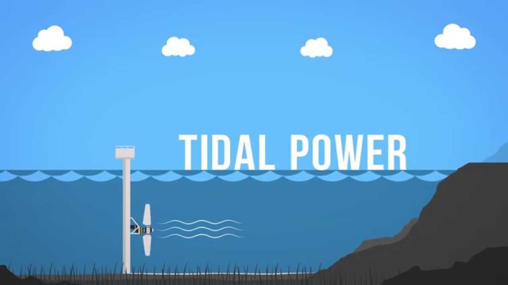
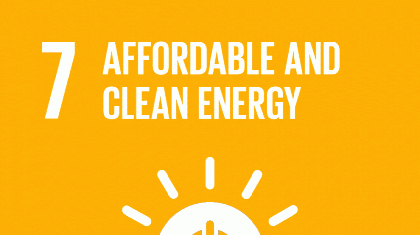

Research
Background
“We are like tenant farmers, digging up the land around the world for fuel, when we should be using
nature’s inexhaustible sources of energy—sun, wind, and tide...”
Statement of problem
| S.No | Resource | Percentage |
|---|---|---|
| 1 | Coal | 53.70% |
| 2 | Lignite | 1.70% |
| 3 | Gas | 6.70% |
| 4 | Diesel | 0.10% |
| 5 | Nuclear | 1.80% |
| 6 | Large Hydro | 12.30% |
| 7 | Small Hydro | 1.30% |
| 8 | Wind Power | 10.20% |
| 9 | Solar Power | 9.50% |
| 10 | Biomass | 2.70% |
Analysis
1) Present methods of tackling the problem:
At present no such remarkable projects have been undertaken in India but there are other models of Tidal Energy harnessing plants around the world although they have a lot of disadvantages including high construction costs and large amount of electro-magnetic emissions which are harmful for the marine life.
2) Proposed solution:
The tidal energy harnessing system as discussed in this abstract could prove to be a turning stone and a significant step towards the utilization of the abundant sustainable resources available.
3) Alternate solution /approaches:
In the recent years the government has also taken various steps in this direction like The Gujarat government will be developing India’s first tidal energy plant and the state government has approved Rs 25 crore for setting up the 50 MW plant at the Gulf of Kutch but the project is still under hold.
4) Novelty of approach:
My approach can be considered better because there is only one-time investment in the project. Secondly it has a massive capacity of producing electricity and finally it is suitable for most of the coasts of India and does not have any harmful effects on the aquatic eco-system.